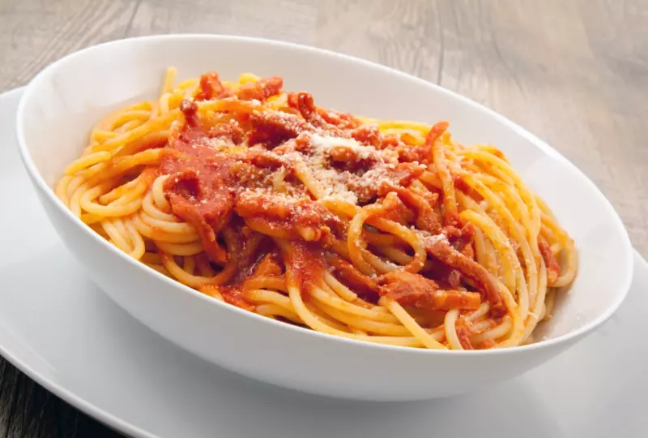

AMATRICIANA

Ingredients
- Speghetti - 300g
- Guanciale or Bacon - 150g
- Peeled totmatoes - 400g
- Grated Pecorino romano cheese - 75g
- Chili pepper - 1
- White wine - 50g
- Extra virgin olive oil - To taste
- Salt - to taste
Preparation
Boil the water to cook the pasta in, then add salt. Prepare the sauce: take the guanciale (or bacon), remove the pork rind 1 and cut it into slices about 1 cm thick then into strips about 0,5cm wide.
Heat a drizzle of oil in a pan, preferably a stainless steel skillet, add the whole chili pepper and the guanciale (or bacon) cut into strips; brown over low heat for 7-8 minutes until the fat has melted and the meat is crunchy; stir often to prevent it from burning. Once the fat has melted, pour in the white wine, turn up the heat and let it evaporate.
Transfer the guanciale to a plate and set aside, pour the peeled tomatoes into the same pan, breaking them up with your hands directly into the cooking liquid, continue cooking the sauce for about 10 minutes. As soon as the water boils, pour in the spaghetti and cook them al dente.
Add salt to taste, remove the chili pepper from the sauce, add the guanciale (or bacon) strips to the pan and stir to mix.
Once the spaghetti are cooked, drain them and add them directly to the sauce in the pan. Sauté the pasta very quickly to mix it well with the sauce. If you like the pasta al dente you can turn off the heat otherwise pour a little of the pasta cooking water to continue cooking. To finish, sprinkle with grated pecorino cheese: your spaghetti all'Amatriciana is ready to be served!
Home